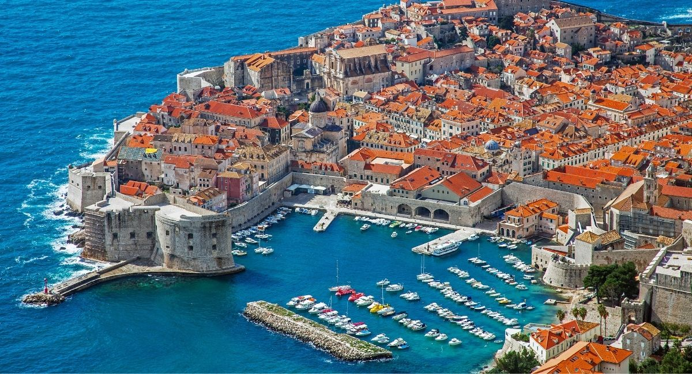
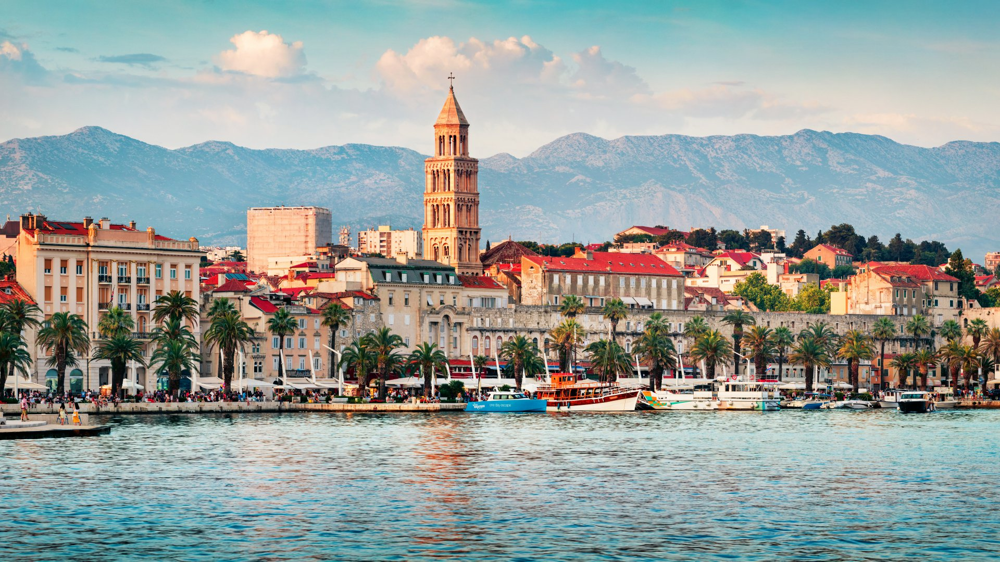

La Croatie est un pays d'Europe de l'Est sur la côte adriatique. Si elle compte plus d'un millier d'îles, elle est aussi traversée par les Alpes dinariques. Sa capitale, Zagreb, se distingue par sa haute-ville médiévale et ses nombreux musées.
Zagreb: La magie de la ville haute. C'est le cœur du vieux Zagreb, le berceau de la capitale croate, fondée au XIIe siècle : Gorjni Grad, la ville haute, perchée sur des collines, avec son lacis de ruelles pavées, ses vieilles demeures et ses nombreux escaliers qui la relient au reste de la ville. Musées à voir: Le musée des Cœurs Brisés Voici un musée sans doute unique au monde... Il y a cinq ans, deux Croates, Olinka Vištica et Drazen Grubišic, ont voulu préserver les reliques de leur relation amoureuse après leur séparation. C'est ainsi qu'ils ont eu l'idée de fonder le Musée des Cœurs Brisés, exposant souvenirs et témoignages d’histoires d’amour du monde entier. Ils ont demandé à une centaine de couples de leur envoyer des objets ayant marqué leur vie intime afin de les exposer. Et c'est ainsi qu'ils ont conçu leur musée entièrement consacré à la rupture amoureuse, qui se trouve dans un bel hôtel particulier de Gradec (Ćirilometodska 2). On y trouve, entre autres objets venus du monde entier, un rétroviseur brisé pendant une dispute, un string fait de bonbons, un collier de chien et des menottes (pour les sado-masos ?), une hache utilisée pour tout détruire dans le foyer après la rupture… On se rend compte qu’en matière de rupture, comme en amour d’ailleurs, l’imagination n’a pas de limites ! Et si vous sortez d’une déception amoureuse, vous pouvez toujours envoyer votre objet fétiche au musée.
Dubrovnik:
La ville de Dubrovnik, est un port et centre touristique situé au sud de la Dalmatie, au pied de la montagne de la Srd. Elle est riche d’un point de vue historique et culturel et a été placée sur la liste du patrimoine mondial de l’UNESCO. Elle est surnommée « Perle de l’Adriatique« .
En raison de sa beauté et de son importante offre touristique, Dubrovnik est une des destinations les plus attrayantes de la Méditerranée, d’autant que la ville se visite toute l’année.
Le tourisme a commencé à se développer avant la Première Guerre mondiale. Outre son patrimoine architectural de renommée mondiale, Dubrovnik p
possède de belles plages rocheuses, des plages de galets et des plages de sable. La ville de Dubrovnik profite en outre d’un climat méditerranéen et dispose également d’une végétation agréable.

Split: Split est une destination attractive pour passer ses vacances en Croatie. La ville dispose de nombreuses plages et fait face à plusieurs îles invitant les visiteurs à la croisière. Ville portuaire, son industrie prospère dans la construction navale. Dans les environs, la culture des fruits et légumes constitue la principale activité économique des habitants. On retrouve sur les marchés de Split comme celui de Pazar des produits frais et de qualité. La ville de Split peut se vanter d’avoir une excellente offre touristique. Elle inclut différents types d’hébergement comme des hôtels, des appartements et chambres en location. La gastronomie locale est à découvrir à travers les nombreux restaurants de la ville et principalement les konobas. Ces restaurants typiquement dalmates proposent d’authentiques plats régionaux comme des beignets frits appelés fritule. 